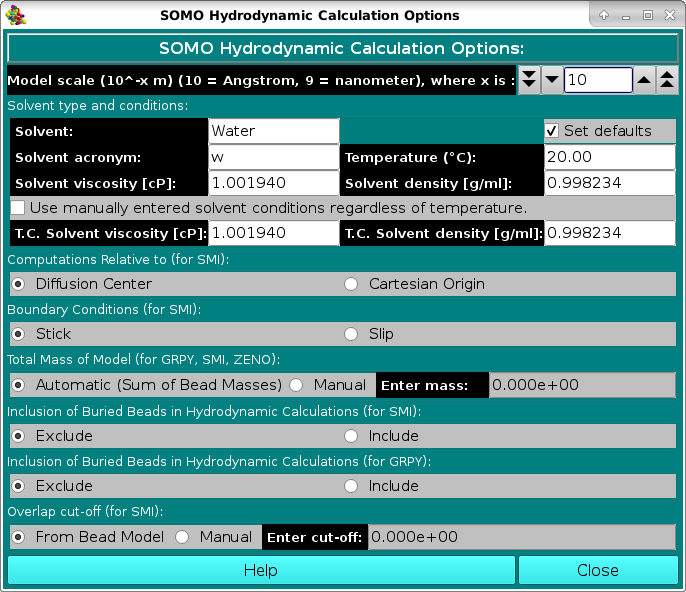

| |
Manual |
 |
In this module, various options controlling the computations of the hydrodynamic parameters for bead models can be set. The Model units (-10 = Angstrom, -9 = nanometer) field sets the scale units of the bead model being examined. Models derived from PDB structures are in Angstrom units, but the user might wish to compute the hydrodynamic parameters for bead models coming from different sources, for instance from small angle solution scattering data, which might be in other units like nanometers. The field sets the exponential relating the units to meters (default: -10). The Solvent type and conditions: box allows the definition of the solvent conditions to which the hydrodynamic computations are referred. The default conditions (Water @ 20 °C) can be automatically set by selecting the Set defaults checkbox. Otherwise, enter a text description of the solvent in the Solvent field (default: Water) and its acronym (max 3 characters; default: w) in the Solvent acronym field. The temperature (°C) can be set in the Temperature (°C): field (default: 20 °C), which will also affect the value of the partial specific volume vbar, according to the equation: vbar(T °C) = vbar(ent) + [4.25 x 10-4 (T - T(ent))]
where vbar(ent) is either the vbar value calculated by the program at T(ent)=20 °C, or the manually entered vbar with its associated T(ent). See here for how to control the vbar parameter.
To allow for more freedom in setting the solvent conditions, from the February 2021 release a new option is present: by selecting the checkbox "Use manually entered solvent conditions regardless of temperature", the values present in the "T.C. Solvent viscosity [cP]:" (default: 1.001940) and "T.C. Solvent density [g/ml]:" (default: 0.998234) will be used (T.C. stands for "Temperature Corrected", meaning that these values have been measured or calculated at a specific temperature). Note that these settings will be used by all the available computational methods, SMI, ZENO, and GRPY . The other options will affect either all or just some of the available computational methods. The "Computations Relative to (for SMI):" box presents two alternative options that will be applied only to the SMI method, Diffusion Center and Cartesian Origin. The differences between the two are subtle, and are fully described in Garcia de la Torre and Bloomfield, Q. Rev. Biophys. 14:81-139, 1981 (default: Diffusion Center). The "Boundary Conditions (for SMI):" box also has two alternative options, valid only for SMI, Stick (6πη0) or Slip (4πη0). For structures whose size is greater than the hypothetical solvent molecules, the stick boundary conditions apply. For the SMI method, the slip boundary conditions should perhaps be used only when the size of the entire molecule is comparable with the size of the solvent molecules (see Venable and Pastor, Biopolymers 27:1001-1014, 1988; Garcia de la Torre and Bloomfield, Q. Rev. Biophys. 14:81-139, 1981) (default: stick).
The "Total Mass of Model (for GRPY, SMI, ZENO):" box, that applies to all methods, has two checkboxes allowing the user to select or override the Automatic (Sum of Bead Masses) computation of the mass of the model obtained by summing over the mass assigned to each bead. This can be done by selecting the Manual checkbox and entering a value in the Enter mass field. For normal operations on models generated by US-SOMO from PDB files, the Automatic option will do fine, except if a relevant number of non-coded or incomplete residues are skipped or are modeled with the Automatic Bead Builder (because then the total mass will be appreciably underestimated). If a Manual value is entered
in this field (and the Automatic (Sum of Bead Masses) checkbox is deselected), a message will be displayed in the progress window ("ATTENTION: MW = ....."). This should avoid the use of an incorrect external total mass value resulting by inadvertently leaving the Manual option selected from a previous model-generating session.
The "Inclusion of Buried Beads in Hydrodynamic Calculations (for SMI)" box, valid only for the SMI method, allows to either Exclude or Include the beads labeled as buried in the hydrodynamic computations by SMI for SoMo models without overlaps. We have demonstrated (Rai et al., Structure 13:723-734, 2005; Brookes et al., Eur. Biophys. J., 39:423-435, 2010) that for these models excluding the buried beads has no effect on the translational diffusion properties. Moreover, as the memory required by the full supermatrix inversion procedures implemented in the SMI hydrodynamics computations module grows exponentially with the number of beads employed, excluding the buried beads from the computations allows for both a faster processing and the capability of processing bigger structures (default: Exclude). The "Inclusion of Buried Beads in Hydrodynamic Calculations (for GRPY)" box, valid only for the GRPY method, allows to either Exclude or Include the beads labeled as buried in the hydrodynamic computations by GRPY. As GRPY calculates the rotational diffusion coefficients and the intrinsic viscosity with a sound procedure, the effect of excluding a relevant portion of the beads, especially for atomic-sized beads such as in the vdW models, would need an in depth investigation. Preliminary tests (February 2021,) indicate that reducing by ∼50% the number of the used beads by using an ASA probe radius of 1 Å and a cut-off of 1% of the bead theoretical surface area (see here) has a ∼+0.1% effect on the translational diffusion coefficient, a ∼-0.13% on the harmonic mean of the rotational relaxation time, and a ∼-0.22% on the intrinsic viscosity values for vdW models of lysozyme. However, excluding buries beads from the computations allows for both a faster processing and the capability of processing bigger structures by the GRPY method. For these reasons, the default option is now to exclude the buried beads. The "GRPY Numerical Precision:" box, valid only for the GRPY method, selects whether the mobility matrix is stored and factored in Double precision or in Float (single) precision. Single precision approximately halves the memory required by the computation and can be useful for very large models; the reported hydrodynamic parameters are unchanged to the displayed precision, and only certain near-zero coupling terms that are not reported lose accuracy (default: Double). The "GRPY Shell Reduction (reduced beads, with error estimate):" box, valid only for the GRPY method, is available from the August 2026 release. It addresses the same question raised by the Inclusion of Buried Beads (for GRPY) option above, but supplies the answer for the structure actually being computed rather than relying on a general rule. Because the cost of GRPY grows as the cube of the number of beads, reducing that number is by far the most effective way to speed up a calculation; and because a dense bead model is hydrodynamically screened — beads in the interior sit in essentially stagnant solvent and carry almost no drag — a large fraction of them can be removed with very little effect. The difficulty with any fixed rule of the form "keep X% of the beads" is that the user has no way of knowing what error it introduced on their particular model. The procedure is described in outline below; a full account, with the mathematics and the references, is given on a separate page. Instead of applying such a rule, this option performs the exact GRPY calculation several times, on a series of progressively larger subsets of the most solvent-exposed beads (each subset roughly twice the size of the previous one), and stops as soon as two successive results agree to within the requested accuracy. The remaining error is then estimated by Richardson extrapolation of the differences between successive results. It is therefore not an approximation with a tuned constant, but a convergence test that reports its own uncertainty. A full account — what is computed, the mathematics of the extrapolation, the safeguards applied to it, how far it has been tested, and the literature it derives from — is given here. Because the series of calculations grows geometrically while the cost grows as the cube of the bead count, the whole series costs only about 1.14 times its final and largest member, so the check itself is nearly free. The largest member of the series is the complete, unreduced model, so a structure that cannot be reduced simply returns the ordinary result with no error introduced, and says so. Each calculation in the series is reported in the progress window as it completes, giving the number of beads used and the error estimate reached so far against the requested target, so the convergence can be followed as it happens; the progress bar refers to the series as a whole rather than to the individual calculations within it. The Off / On selection enables the procedure (default: Off, so that results are unchanged from previous releases unless the option is deliberately selected). The Target accuracy [%] field sets the relative agreement required of every requested quantity (default: 0.5%). The estimated error actually achieved is written into the results file, together with the number of beads used. For every requested quantity the results file gives two values side by side: the computed value, which is the one from the last (largest) calculation actually performed and the one reported everywhere else in the file and in the results window, and the extrapolated value, which is the limit the series projects the complete model would give. The estimated error is the distance between the two. They are two different answers rather than a value and a correction to it: the reported result is always one the program computed, never one inferred from a trend, and the extrapolated value is shown so that it is clear what the error estimate refers to. Note that the single figure quoted in the progress window is the largest of the estimates over all the requested quantities, and the quantity it belongs to is named alongside it; the individual estimates, which are usually appreciably smaller, are listed in the results file. Since the intrinsic viscosity converges considerably more slowly than the others (see below), that figure will usually be its, and reading it as the accuracy of the translational diffusion coefficient would substantially understate the latter. The Require intrinsic viscosity to converge checkbox (default: checked) deserves particular attention, because the various hydrodynamic quantities do not tolerate bead reduction equally. Measured against the unreduced calculation over a range of bead models, at the same degree of reduction the error in the rotational diffusion coefficient is about 1.8 times that in the translational diffusion coefficient, whereas the error in the intrinsic viscosity is about 3.3 times as large, and is systematically one-sided (the reduced model underestimates it). In practice the intrinsic viscosity is what determines when the procedure can stop, and requiring it therefore costs a substantial part of the speed gain. If the box is left unchecked, the intrinsic viscosity and the GRPY Einstein radius derived from it are withheld from the reported results altogether, rather than being reported with a caveat attached: a value carrying a warning is still a value that may be used inadvertently. Both quantities are nevertheless retained in the results file, clearly annotated as unconverged, so that nothing is lost from the record. It should be emphasised that this checkbox bears only on when the series of calculations is permitted to stop, and not on whether the intrinsic viscosity is computed at all: it is obtained from the same matrix as every other quantity, at no additional cost, and is therefore always computed. Accordingly the checkbox is available only while this option is On; when the option is switched Off the checkbox is greyed out but retains its setting, so that it is not lost if the option is switched on again, and that retained setting has no effect whatever — with the option Off the calculation is exact and the intrinsic viscosity is always reported. Some indication of the accuracy of the procedure, and of the effect of bead reduction generally, may be useful. Over 23 bead models spanning 204 to 4068 beads, and separately over 7 different hydrodynamic quantities, the reported error estimate bounded the true deviation from the unreduced calculation in every one of 344 tests. Retaining more than half of the beads changed the translational diffusion coefficient by ~0.02% on average, retaining 30-50% by ~0.12%, and retaining 20-30% by ~0.5%; below about 10% the results degrade rapidly. These figures also give a quantitative answer to the question left open in the preceding paragraph, since excluding the buried beads as described there typically retains ~40% of them. The extent of the testing, and the safeguards that make the reported estimate conservative, are set out here. Two practical notes. The benefit of this option grows with the size of the model, and is negligible for small ones: a model of a few hundred beads is computed in a fraction of a second in any case, and the procedure will usually and correctly decline to reduce it. Furthermore, when the buried beads have already been excluded as described in the paragraph above — which is the default — much of the possible reduction has already been performed, and the further gain is typically a factor of 2 to 3 rather than the much larger factors obtainable from a completely unreduced model. The lasting benefit of this option is thus not primarily its speed, but that it provides, for the first time, an estimate of the error that bead reduction introduces. There is one further consequence worth noting. GRPY refuses outright to start on a model whose matrix would exceed the memory of the machine (see the message quoting the estimated and available memory). When this option is On, that refusal is lifted where it can be: the series of calculations described above is limited to the largest subset that does fit, and the result is reported together with its estimated error, instead of the calculation being declined altogether. Such a result is explicitly marked as having been stopped by the available memory rather than by convergence, and its error estimate will generally be larger than the requested target — it is nonetheless a quantified result where previously there was none. Structures too large even for the smallest subset are still refused. The Save shell bead models checkbox (default: unchecked) is a diagnostic aid rather than a normal operating option. When selected, the reduced bead model used at each calculation in the series is written out and displayed, so that the shell can be seen to thicken as the series proceeds and the beads actually retained can be inspected directly. The files are written to the tmp subdirectory of the current SOMO results directory, named after the model, followed by the settings that produced them and then the suffix -shell-rung-1, -shell-rung-2 and so on, and are overwritten without prompting on each run — they are regenerated whenever the calculation is repeated, and are not intended to be preserved. Note that one viewer window is opened per calculation in the series, so this option is best used on a single model at a time. Each model is written and displayed as its calculation completes, rather than all together at the end. This is deliberate: it allows a shell that is obviously wrong to be recognised while the calculation is still running, and the Stop button will then end the series immediately, without waiting for the calculation currently in progress to finish. Since each calculation in the series costs roughly eight times the one before it, this saves very nearly all of the time that remained. A calculation stopped in this way keeps the result and error estimate obtained so far, which are reported as not converged, in exactly the same manner as any other early stop. The settings that produced a given set of shells are recorded in the file name, in the same manner as the bead-model settings already are, so that shells obtained under different settings do not overwrite one another: SR0_5eta denotes a target accuracy of 0.5% with the intrinsic viscosity required to converge, SR1noeta a target of 1% without it, and sp is added when Float (single) precision was in use. Each of these changes which beads are retained, so the distinction matters when comparing one run against another. The same notation is applied to the GRPY results files (.grpy_res and .grpy.csv), for the same reason: a reduced and an unreduced calculation of the same model, or two calculations at different target accuracies, produce different numbers and would otherwise be written to the same file. Only settings that differ from the defaults appear, so a calculation run with shell reduction Off and in Double precision produces exactly the file names it always has. The bead limit deduced from the available memory is reported in the progress window whenever this option is used, and it can be overridden by setting the environment variable GRPY_SHELL_MAX_BEADS before starting the program — useful to keep GRPY within a smaller footprint on a machine shared with other work. An override is always announced in the progress window, and a value larger than the memory can support is additionally flagged as such. For scripted use, the inclusion of buried beads described above can also be set per run with grpy_bead_inclusion, which is likewise announced when it changes what the run would otherwise have done; this is intended for systematic comparisons between the screened and unscreened cases. Finally, the "Overlap cut-off (for SMI): box, valid only for the SMI method, allows the user to select a different bead overlap cut-off when checking the model before the hydrodynamic computations (it should be recalled that the hydrodynamic interaction tensor used by the SMI method is valid only for non-overlapping beads). If an overlap exceeding the threshold is found between any couple of beads, the computations are halted. An overlap cut-off is already present in the Bead Overlap Reduction set-up options, and if the bead model has been internally generated, then the From Bead Model checkbox should be selected. For models generated in other ways, the tolerance can be increased (at your own risk!) by selecting the Manual checkbox and entering a value in the Enter cut-off field. If this cut-off is different from the one present in the Bead Overlap Reduction module, a message alerting of the different cut-off value will appear in the progress window when the SMI hydrodynamic computations are started (default: From Bead Model). www contact: Emre Brookes
This document is part of the UltraScan Software Documentation
distribution. Last modified on August 8, 2026. |